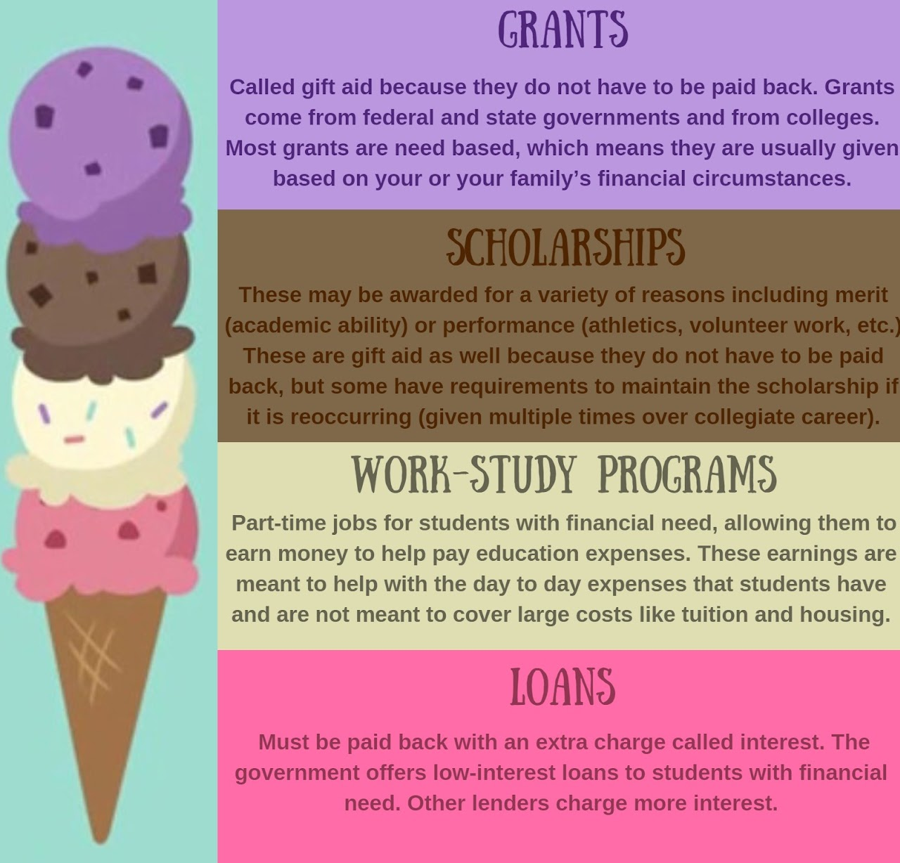

What is Financial Aid?
Although looking at the tuition for an institution may seem unreasonable at first, there are different ways to afford the costs.
|

|
Whether you are a current high school senior applying to college or a current college student, the financial aid process can be highly confusing. However, YOU ARE NOT ALONE! FINANCIAL AID helps students and their families pay for college. It can cover a range of educational expenses, like tuition and fees, room and board, books and supplies, and transportation. MAIN WAYS TO SEEK FINANCIAL AID:
|
|---|
Documents and Financial ApplicationsPublic institutions ask students to fill out and submit the FAFSA, or the Free Application for Federal Student Aid. Private institutions require a different application called the CSS Profile, which is offered by Collegeboard. Many of them also require students to submit financial documents through a portal called IDOC. FAFSAThe FAFSA application requires the following information: student demographics, dependency status, parent demographics, financial information, and the list of colleges that will receive the student’s FAFSA information. It also asks applicants for federal income tax returns, W-2s, other records of money earned, bank statements and records of investment, and records of untaxed income. Most students and their parents fill out the FAFSA after they have filed their income tax returns for the specified year. The IRS Data Retrieval Tool (DRT) can be used to transfer tax information onto the FAFSA. The DRT does not fill in every field, so students should still have their documents with them. Afterwards students will receive their Student Aid Report, which provides applicants with their Expected Family Contribution (EFC). The EFC is what helps public colleges determine the financial aid package they will offer you. The lower your EFC is, the more aid you are likely to receive.1 It’s highly recommended that students sit down with their parents to fill out the application, especially for questions regarding parent income. If you make a mistake on your FAFSA, you can edit it on the My FAFSA page. Federal student aid is renewable for every year that you attend college, public or private, undergraduate or graduate. Millions of dollars in federal student aid go unclaimed every year, likely because students are unaware that they can reapply. 1 EFC only determines the amount of federal student aid a college will give you. Without loans, the maximum that an undergraduate student will receive is usually less than the cost of attendance. CSS Profile and IDOCStudents with non-custodial parents (parents who do not have physical custody) can fill out a waiver if their parent(s) are unable to fill out the CSS Profile.2 If their parent is able to fill it out, they will create a parent account and a new CSS application. They can connect to their child’s account using the student’s CBFinAidID at the beginning of their application. Once students complete the CSS Profile, they will then be prompted to electronically submit federal tax return forms, W-2 forms, and other documents through IDOC. Like the FAFSA, it’s important that students complete the profile with their parents and have the necessary documents handy. Both student and parent documents are required. If a student did not have any income to report for the specified tax year, they can fill out the Non-Filer Statement. If a parent did not file a federal income tax return for the specified year, they can fill out the form as well, but will have to verify their non-filer status. They would have to submit a Verification of Non-Filing Letter, which they can obtain from the IRS electronically. 2 The waiver is only approved in extreme circumstances. Even if a non-custodial parent refuses to submit the CSS Profile, they are still required to do so. The CSS Profile will also ask applicants for federal income tax returns, W-2s, other records of money earned, bank statements and records of investment, and records of untaxed income. Students or parents who are non-payroll workers would submit their 1099 instead of a W-2. Households with unique financial situations may need to speak with an accountant to clarify certain questions on the CSS Profile or FAFSA. Student AidFederal Student Aid comes in grants and Work-Study. Pell grant award amounts depend on a student’s EFC, which is determined by their FAFSA application. The highest amount students can get is usually around $6300. Pell grants do not need to be paid back. Work-Study jobs are part-time jobs for students with financial need. Work-Study jobs are for both full-time and part-time students. They usually are more accommodating of a student’s college schedule than a typical part-time job. The pay depends on the type of work and level of financial need, but it will always be at least federal minimum-wage. Scholarships can come from corporations, nonprofits, universities, community colleges, and more. There exist many lists of scholarships online, including this one. Some colleges consider students for scholarships if they apply before the priority deadline. But for the most part, students have to actively seek out scholarships. These can include scholarships for essays, community service, academic excellence, athletics, research, and more. Programs like Questbridge and Posse partner with institutions to award low-income students with full-rides. Scholarship awards can range from $500 to more than $40,000; in order to maximize their earnings, students often apply for multiple smaller ones and fewer larger ones. Although it’s still worth it to apply to well-known scholarships like The Gates Scholarship, it’s important that students apply to smaller ones as well. Loans are popular among college students. Federal student loans include PLUS loans, unsubsidized loans, subsidized loans, and consolidation loans. PLUS loans are money that the parents of undergraduate students borrow to pay for their children’s undergraduate education. These loans are only applicable to education expenses not covered by other aid. Unsubsidized loans are not based on financial need. However, the amount borrowed will be determined by a student’s school according to their cost of attendance and other financial aid. Students are required to pay interest on these loans while they are attending school. Subsidized loans are based on financial need. The amount borrowed is also determined by the school and may not exceed a student’s financial need. Students must remain enrolled at least half-time and will have a 6 months grace period after they leave school. There are also private student loans. It’s important to exercise caution when considering loans, as they can be difficult to pay off. This website provides more detailed information on the different kinds of loans students can get, including private loans. |
|---|